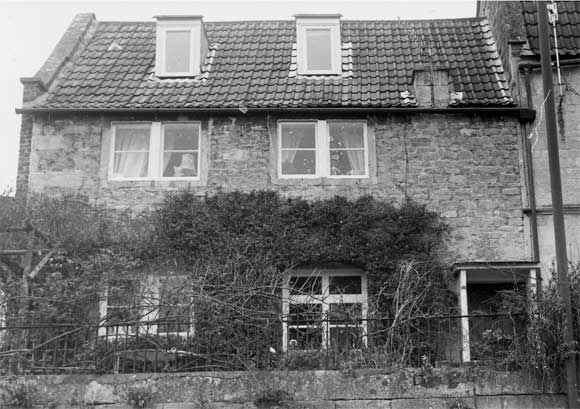

Type of building:
Attached house
Listing:
Grade ll
Plan and elevation:
Main house - Single pile with one room only on the ground floor with direct entry,
although evidence that the house may have had two rooms. Two-storey plus a loft
conversion. Extension (previously a separate building) - single pile single storey
with three rooms in a line.
Summary of the probable main building
history:
Mid 18th Century with late 18th Century modifications. Extension of early-mid
19th Century.

South elevation
Exterior:
Main house of coursed squared rubble stone with dressed quoins. Tiled pitched
roof with coped raised verges. South elevation has one modern window and three
two-light casement windows. The latter with plain square mullions. Two modern
dormer windows in attic space. Modern door with dressed stone surrounds and chamfered
and plain stopped jambs. There is an added flat stone hood on brackets which is
not centralised with the original door frame. Brackets have beaded edges. The
ashlar chimney stack is capped. The gable end is brick built and laid in English
garden bond but does not extend to cover the dressed stone quoins of the main
structure. The gable has an entry, which is not visible from the exterior, one
sash first floor window and one attic window which are all under brick voussoirs
with key stones. There is a later single storey building, originally independent
of the main structure but now linked to its gable end by a modern connection,
which is of ashlar construction with c.20 cm thick walls, with three modern sash
windows and a modern stable door to the south elevation (a blocked window occurs
on the north elevation where the wall is of rubble construction and c. 38 cm thick).
There are indications that this structure was once of greater length with a surviving
rear wall containing a stone fireplace surround with beaded edges and blocked
with an inverted porcelain kitchen sink scratch dated 27/2/29 - presumably the
date of the demolition of this part of the building
Interior:
Main house - extensively modernised but external wall thickness of c 45 cm. There
is a blocked window in the north wall of the ground floor room and a small fireplace
with beaded stone surround in the same wall. A larger fireplace is on the east
(party) wall, which together with traces of a partition wall on the south wall,
indicates that the room at one time divided into two rooms. There is no indication
of a fireplace on the south wall to account for the capped chimney on the south
elevation although a fireplace is present in the corresponding first floor room
above. Window openings are splayed. The roof is of two substantial trusses with
the purlins cut back at the joints with the principals. Joints are pegged. In
the three-roomed extension each room has a blocked fireplace on their common north
wall.
Date & development:
The substantial roof structure and roof pitch (c. 50 %) of the main building indicate
the existence of a former stone roof covering. The cut back purlins point to a
mid 18th Century date. The mullion windows, stone fireplace and wall thickness
are not inconsistent with this conclusion although the title deeds are dateable
to 1724 (information from the owner) which, however, need not necessarily apply
to the present building. The gable consists of hand made bricks c. 9" x 4
1/4" x 2 3/8" dimensions. This sizing together with the stylistic voussoirs
suggests a late 18th Century date. Brick is unusual in a stone area like Batheaston
but there is a parallel with the brick gabled party wall in property ref. BE 040
where the bricks are of about the same size and look to be of a similar age. The
position of the principal entry immediately adjacent to the party wall is unusual
and may be a later opening although there is no indication of any "original"
entry (may be masked by property No. BE 017 butted to the north wall which is
certainly known to cover a former window of the cottage - see also property
ref. BE 017 for a discussion of the possible interrelated development of the properties).
The ashlar built extension points to an early-mid 19th Century date. Once separate
from the main building and at an angle to it the purpose of this structure is
uncertain but the existence of four fireplaces (including the demolished section)
indicates residential intentions - possibly of an itinerant nature.
Ownership / occupation:
The Tithe Map and Apportionment Schedule shows the property owner as Abraham Cottle.
The property being described as "houses and gardens" in the occupation
of "sundry" persons.
References:
- Tithe Map and Apportionment Schedule 1840. Somerset Record Office
- Bath & County Graphic Magazine 1901, Bath Reference Library
Survey Drawings
| Ground
Plan |
Section |